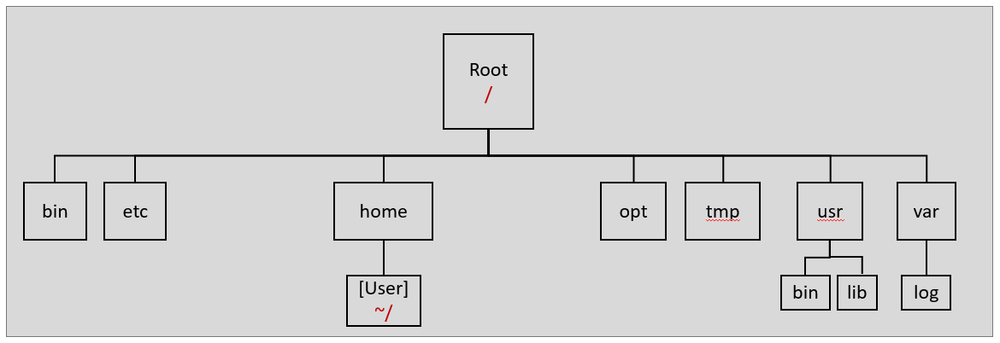
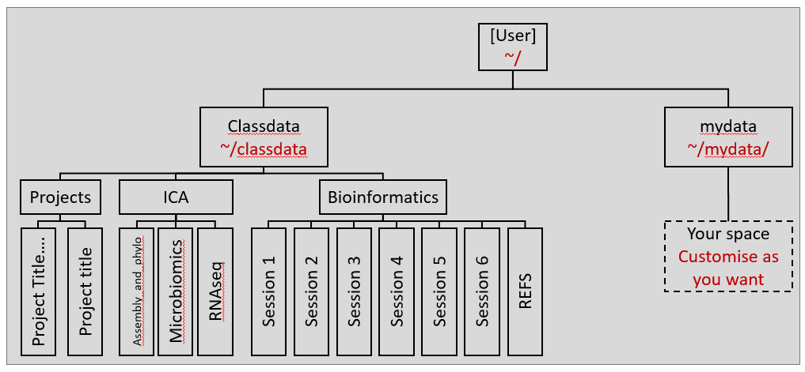

Command parameters agguments
^ ^ ^
what I how I want on what do
want to do to do it I want to do itAnatomy of a Command
Linux/Unix commands usually take the form shown below
NB usually each element is separated by only one space
The first item you supply on the command line is interpreted by the system as a command; that is – something the system should do. Items that appear after that on the same line are separated by spaces. The additional input on the command line indicates to the system how the command should work. For example, what file you want the command to work on, or the format for the information that should be returned to you.
Most commands have options available that will alter the way they function. You make use of these options by providing the command with parameters, some of which will take arguments. Examples in the following sections should make it clear how this works. With some commands you don’t need to issue any parameters or arguments. Occasionally this is because there are none available, but usually this is because the command will use default settings if nothing is specified.
If a command runs successfully, it will usually not report anything back to you, unless reporting to you was the purpose of the command. If the command does not execute properly, you will often see an error message returned. Whether or not the error is meaningful to you depends on your experience with Linux/Unix and how user-friendly the errors generated were designed to be.
Note: Items supplied on the command line separated by spaces are interpreted as individual pieces of information for the system. For this reason, a filename with a space in it will be interpreted as two filenames by default.
File permisions
The command ls lists files in a directory.
By default, the command will list the filenames of the files in your current working directory. At the moment, this is probably your home directory.
If you add a space followed by a -l (that is, a hyphen and a small letter L), after the ls command, it alters the behavior of the command: it will now list the files in your current directory, but with details about them including who owns them, what the size is, and what kind of file it is. Information about this is shown in the code block below.
drwxr-xr-x 6 manager users 4096 2008-08-21 09:26 twilliams
-rw-r--r-- 1 manager users 9784 2007-03-19 14:09 hybInfo.txt
-rw-r--r-- 1 manager users 9784 2007-03-19 14:09 targets_v1.txt
-rw-r--r-- 1 manager users 7793 2007-03-19 14:14 targets_v2.txt
^ ^ ^ ^ ^ ^ ^
File File User Group Size Date/Time Filename
type PermissionThe File permissions are given in triplets rwx which represent write - read - execute permissions. The first triplet are the permission associated with the user, the second three defined group and the last three the world.
You can also use glob patterns to limit the files you wish to list.
* an asterisk means any string of characters
? a question mark means a single character
[ ] square brackets can be used to designate a group of charactersOpen your terminal and use ls -l command to interrogate the files in your directories.
Learning about Linux commands
Most Linux commands have a manual page that provides information about the command and options that can alter its behaviour. Many tasks can be made easier by using command options. A good rule of thumb is to ask yourself whether what you want to do is something many others may have wanted to do. If the answer is yes, then there may well be commands and options available to do that task.
Linux manual pages are referred to as man pages. To open the man page for a particular command, you just need to type man followed by the name of the command you are interested in. To browse through a man page, use the cursor keys (↓ and ↑). To close the man page simply hit the q key on your keyboard. If you do not know the name of a command to use for a particular job, you can search using man –k followed by the type of thing you are trying to do. An example of this is in exercise below).
Look up the manual information for the ls command by typing the following in a terminal:
man lsRead through the man page. You can scroll forward using the up and down arrow keys on your keyboard. You can go forward a page by using the space bar, and move backwards a page by using the b key.
What does the -m option do? What about the -a option? What would running ls -lrt do?
Press the q key when you want to quit reading the man page.
Try running ls using some of the options mentioned above.
Look up some programs with man pages with the keywords “list directory”
man --k "list directory"
Note
Programs rather than core linux commends often have help pages that can be access in the same manner as a linux command manual but using -h or -help. Other will provide you a help is you run the program with no arguments.
program -h
# or
program -helpChanging directories and tab completion
Changing Directories
The command used to change directories is cd
If you think of your directory structure, (i.e. this set of nested file folders you are in), as a tree structure, then the simplest directory change you can do is move into a directory directly above or below the one you are in.

If you are using a Cardiff personal cloud qubernetes container you will have access to the following additional file structure.

# Change to a directory to your home directory use
cd ~/
# Now move into teh bioinformmatics Session1 of classdata
cd ~/classdata/Bioinformatics/Session1
# Go down a directory
cd ..
# you can review where you are at any time using the print working directory command
pwdTab completion
Tab completion is an incredibly useful facility for working on the command line.
One thing tab completion does is complete the filename or program name you want, saving huge amounts of typing time. It also ensures that there are no errors in what you typed, which is easy to do with long filenames or paths
For example, from the classdata directory, you could type:
#navigate to classdata folder
cd
# now start to type Bioinformatics
cd Bio now hit the tab key.
If there is only one directory with a name starting with the letters “Bio”, the rest of the name will be completed for you. Here this would give you:
cd Bioinformatics User accounts are setup such that if there is more than one file with that combination of letters, all the files will be shown to you. You can choose the one you want by typing more of the filename, or by double tapping the tab key.
Return to your home directory if you are not already there by typing cd ~/
Type cd cl and use tab completion for the rest of the command. Then press the return key.
You will now be in your ~/classdata directory.
Type cd Bio and use tab completion for the rest of the command. Then press the return key.
You will now be in your ~/classdata/Bioinformatics directory
Type l Ses and hit tab twice to view the files available.
Now press the tab key again. You can gradually add extra letters and use the tab key to limit the options available.
As you get faster with this, it will save you a lot of typing effort.
Auto completion for programs
Auto completion works when you are calling programs that are available (where you have installed or loaded them with module load) and when you are constructing command. However, auto completion does NOT work if you are in a text editor constructing a script.